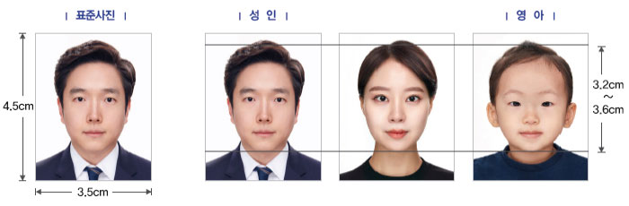

여권사진 규정
해외 출입국 시 본인 확인을 위한 가장 중요한 요소인 여권 사진은 국제민간항공기구(ICAO)의 엄격한 기준을 따릅니다.
최근 6개월 이내 촬영한 사진만 접수 가능합니다.
여권 사진 규격에 적합하지 않은 사진을 제출할 경우 여권 접수가 지연되거나 거부될 수 있습니다.
또한, 규정에 맞지 않는 사진으로 발급된 여권을 사용할 경우 해외 출입국 심사 시 불이익을 받을 수 있으니 아래 규정을 반드시 준수해 주시기 바랍니다.
1. 기본 사항 (크기 및 품질)

머리길이
3.2~3.6cm
3.2~3.6cm
- 가로 3.5cm, 세로 4.5cm인 천연색 상반신 정면 사진이어야 합니다.
- 머리 길이(정수리부터 턱까지)가 3.2 ~ 3.6cm 사이여야 합니다.
- 여권발급 신청일 전 6개월 이내 촬영된 사진이어야 합니다.
- 배경은 테두리가 없는 균일한 흰색이어야 합니다.
- 사진 표면에 잉크 자국, 구김 등이 없어야 하며, 인화지(일반 사진 용지)에 인화된 사진만 가능합니다.
(집에서 일반 용지로 인쇄한 사진 불가) - 포토샵 등으로 원본을 인위적으로 과도하게 보정한 사진은 불가합니다.
2. 항목별 세부 규정
| 얼굴 방향 및 표정 |
|
|---|---|
| 눈과 안경 |
|
| 의상 및 장신구 |
|
| 조명 및 배경 |
|
3. 영아 (24개월 이하) 특별 규정
모든 기준은 성인과 동일하게 적용되나, 유아의 특성을 고려하여 아래의 예외 사항이 허용됩니다.
- 장난감이나 보호자가 노출되지 않아야 합니다. (부모가 안고 찍은 사진 불가)
- 입을 다물고 촬영하기 어려운 신생아의 경우, 입을 조금 벌리는 것은 예외적으로 허용됩니다.
- 정면 응시가 어려운 경우 가급적 정면을 바라보도록 촬영해야 합니다.